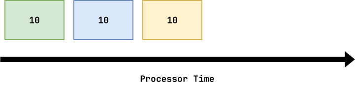
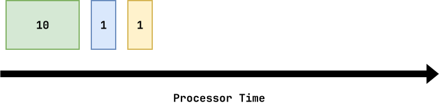
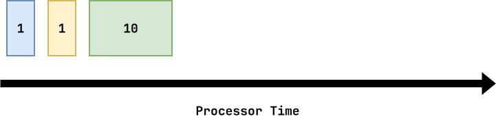
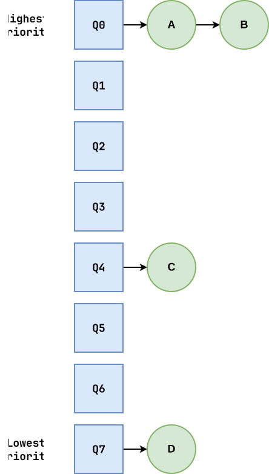
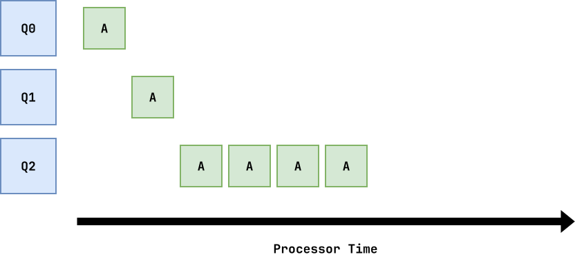
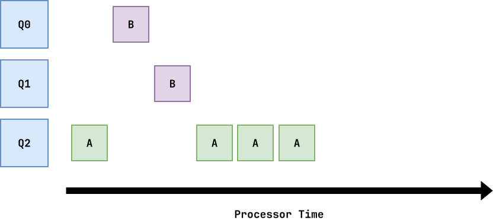
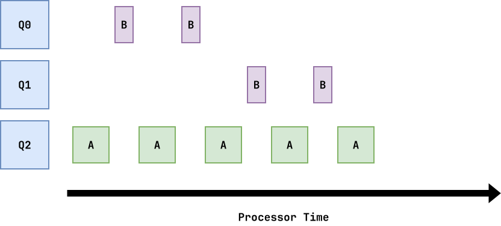
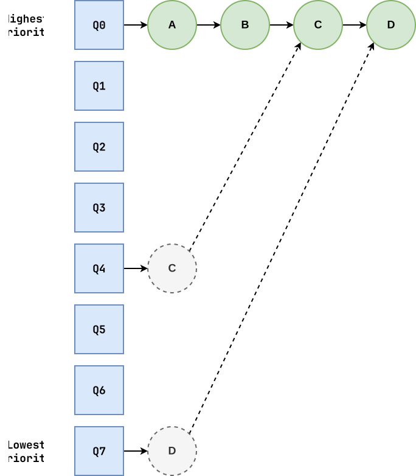
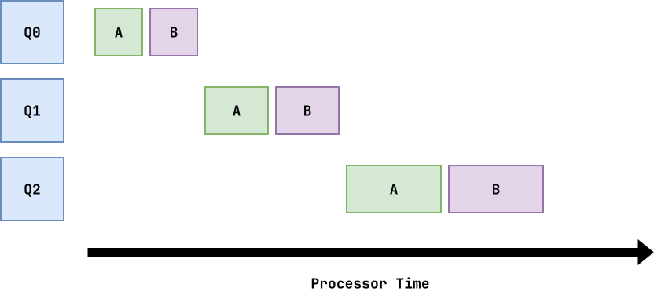

Logistics¶
- Interview 01: Signup for time slots
Scheduling: Review¶
-
Scheduling Processes
We want to run multiple jobs at once, but each job needs the CPU. So what we do is we abstract CPUs as process (ie. machine state) and store them in a queue for selection.
Scheduling Activation
- Process terminates.
- Process initiates system call.
- Process interrupted by timer.
Scheduling: Questions¶
-
What are the strengths and weaknesses of:
- FIFO Scheduling
- Round Robin Scheduling
How does MLFQ address these weaknesses?
How does Lottery address these weaknesses?
Review: Assumptions¶
- Same amount of time
- Arrive at the same time
- Each job runs to completion
- Only CPU (no I/O)
- Run-time is known
Scheduling: Example 1¶
Jobs A, B, and C arrive at time
0and run for10seconds each:
Metric FIFO Round Robin Turnaround (10 + 20 + 30) / 3 = 20 (28 + 29 + 30) / 3 = 29 Response (0 + 10 + 20) / 3 = 10 (0 + 1 + 2) / 3 = 1 Project 01: Track total metrics and divide by number of finished jobs.
Scheduling: Example 2¶
Jobs A, B, and C arrive at time
0. A runs for10seconds and B and C for1second:
Metric FIFO Round Robin Turnaround (10 + 11 + 12) / 3 = 11 (12 + 2 + 3) / 3 = 5.67 Response (0 + 10 + 11) / 3 = 7 (0 + 1 + 2) / 3 = 1 An example of Convoy Effect.
Scheduling: Example 3¶
Jobs A, B, and C arrive at time
0. A runs for10seconds and B and C for1second:
Metric FIFO Round Robin Turnaround (1 + 2 + 12) / 3 = 5 (1 + 2 + 12) / 3 = 5 Response (0 + 1 + 2) / 3 = 1 (0 + 1 + 2) / 3 = 1 Must be careful of starvation.
Scheduling: FIFO vs Round Robin¶
FIFO¶
-
Good turnaround time
-
Sensitive to Convoy Effect
-
Try SJF
Round Robin¶
-
Good response time
-
Requires preemption (timer interrupt)
-
Fair (divides CPU evenly)
MLFQ: Overview¶
A Multi-Level Feedback Queue (MLFQ) tries to optimize both turnaround time and response time:
-
Like FIFO, it tries to complete shortest jobs first.
-
Like Round Robin, it tries to be fair.
-
Unlike either, it will factor incorporate I/O and will adjust priority levels over time.
MLFQ: Priority Levels¶
To accomplish this, MLFQ uses multiple queues, where each queue represents a particular priority level:
-
If Priority(
A) > Priority(B),Aruns. -
If Priority(
A) == Priority(B),AandBrun in Round Robin. -
A job is initially placed in the highest priority level.
-
Once a job uses up its time allotment at a given level, its priority is reduced (ie. it is moves down one level)
-
After some time period
S, move all jobs in the system to the topmost queue.

MLFQ: Example (Single Long Job)¶

A single long job is broken up into discrete time slices.
Over time, the job reduces in priority to allow new jobs an opportunity to run.MLFQ: Example (Long vs Short)¶

When a short job arrives, it will start in the topmost queue and be ran first. This allows for short jobs have a fast turnaround and response time.
Good for interactive use cases.
MLFQ: Example (I/O vs CPU)¶

Jobs that are mostly I/O will maintain a higher priority since they do not use up their CPU allotment as quickly as compute jobs. This is good for interactive jobs that require good response times.
Analogy: Flex points roll over.
MLFQ: Priority Boost¶
Problem¶
If a job is always in a lower priority level relative to other jobs, it will starve because it will not have an opportunity to run.
Solution¶
Periodically provide a priority boost by moving all jobs to the topmost queue.
Exact time is a voodoo constant because there isn't an objective way to set it.

MLFQ: Accounting¶
To determine when a job should be moved down a queue (ie. lower its priority), we keep track of how much of a time slice or allotment the job has used.

-
When a time allotment is used up, we lower the priority.
-
We allocate more time for jobs in lower priority queues.
MLFQ: Algorithm¶
def scheduler_mlfq(s: Scheduler): # Preempt a running job if not s.running.empty(): p = s.running.pop() level = ExceededThreshold(p) ? min(p.priority + 1, MAX_LEVELS - 1) : p.priority Pausejob(p) MovejobToSchedulerLevel(s, p, level) # Apply periodic priority boost if TimeForPriorityBoost(s): for level in s.levels[1:]: while not level.empty(): p = level.pop() MovejobToSchedulerLevel(s, p, 0) # Move jobs from waiting queue to top priority level while s.waiting.size(): p = s.waiting.pop() MovejobToSchedulerLevel(s, p, 0) # Start or resume jobs by moving from levels to running for level in s.levels: while level.size() and s.running.size() < NCPUS: p = level.pop() if p.pid == 0: Startjob(p) else: Resumejob(p) s.running.push(p)MLFQ: Summary¶
-
MLFQ is an attempt to optimize for both turnaround time and response time.
It prioritizes new, short, and I/O heavy jobs over long CPU intensive jobs.
-
MLFQ devolves into Round Robin.
-
MLFQ involves some "voodoo magic" and some tricks.
-
MLFQ (or some variant) has been used in real world operating systems.
Exercise: Scheduling (FIFO)¶
Consider a single-CPU, a timeslice of
10 ms, and the following processes:Process Arrival Time Run Time A 0 ms 30 ms B 10 ms 20 ms C 20 ms 10 ms Waiting B B, C C C Running A A A B B C 00 10 20 30 40 50 60 Sketch out exactly when each process runs, and for how long given the
FIFO scheduling policy.Exercise: Scheduling (Round Robin)¶
Consider a single-CPU, a timeslice of
10 ms, and the following processes:Process Arrival Time Run Time A 0 ms 30 ms B 10 ms 20 ms C 20 ms 10 ms Waiting A C, B B,A A Running A B A C B A 00 10 20 30 40 50 60 Sketch out exactly when each process runs, and for how long given the
Round Robin scheduling policy.Note: Append to Waiting, then rotate!
Exercise: Scheduling (MLFQ)¶
Consider a single-CPU, a timeslice of
10 ms, and the following processes:Process Arrival Time Run Time A 0 ms 30 ms B 10 ms 20 ms C 20 ms 10 ms Q0 (10) A B C Q1 (20) A A, B A, B A, B B Running A B C A A B 00 10 20 30 40 50 60 Note: Each queue has a different time allotment.